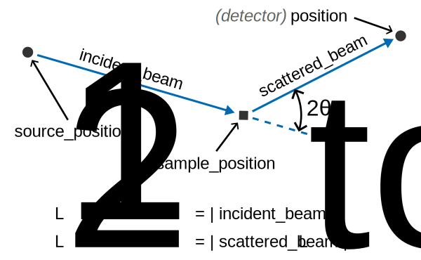
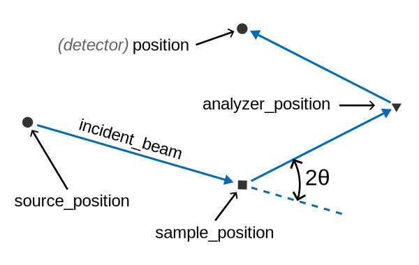

Coordinate transformations#
We often need to compute new coordinates from other coordinates; for example wavelength from time-of-flight or scattering angle from positions. Scipp has a flexible utility for this purpose: scipp.transform_coords.
Setup#
Consider a beamline with straight neutron beams (i.e., without guides, focusing optics, analyzers, etc.):

We want to compute the total length of the flight path Ltotal from positions of the detector, sample, and source.
It is easy enough to write code that does this.
However, consider the backscattering QENS beamline from the McStas session:

Here, we need to take the analyzer into account when computing Ltotal.
To illustrate, we begin with the example of straight beams and generate some test data. The exact contents of the data don’t matter here, but note that we store the various positions as coordinates.
import scipp as sc
source_position = sc.vector([0.0, 0.0, -10.0], unit="m")
sample_position = sc.vector([0.0, 0.0, 0.0], unit="m")
position = sc.vectors(
dims=["position"],
values=[
[0.0, 0.5, 1.0],
[0.0, 1.0, 1.0],
[0.0, 1.5, 1.0],
],
unit="m",
)
data = sc.DataArray(
sc.ones(sizes={"position": 3}),
coords={
"source_position": source_position,
"sample_position": sample_position,
"position": position,
},
)
data
- position: 3
- position(position)vector3m[0. 0.5 1. ], [0. 1. 1.], [0. 1.5 1. ]
Values:
array([[0. , 0.5, 1. ], [0. , 1. , 1. ], [0. , 1.5, 1. ]]) - sample_position()vector3m[0. 0. 0.]
Values:
array([0., 0., 0.]) - source_position()vector3m[ 0. 0. -10.]
Values:
array([ 0., 0., -10.])
- (position)float64𝟙1.0, 1.0, 1.0
Values:
array([1., 1., 1.])
The manual approach#
A straight-forward way of computing Ltotal from this is the following:
L1 = sc.norm(data.coords["sample_position"] - data.coords["source_position"])
L2 = sc.norm(data.coords["position"] - data.coords["sample_position"])
Ltotal = L1 + L2
Ltotal
- (position: 3)float64m11.118, 11.414, 11.803
Values:
array([11.11803399, 11.41421356, 11.80277564])
This uses vector arithmetic on the coordinates and scipp.norm to compute vector lengths.
Less pedestrian: using functions#
However, if we now want to do this for the QENS experiment, we need to rewrite the entire procedure.
To avoid this, let us define some functions and use those to compute the sample Ltotal as before:
def straight_l1(source_position, sample_position):
return sc.norm(sample_position - source_position)
def straight_l2(sample_position, position):
return sc.norm(position - sample_position)
def l_total(L1, L2):
return L1 + L2
L1 = straight_l1(
source_position=data.coords["source_position"],
sample_position=data.coords["sample_position"],
)
L2 = straight_l2(
sample_position=data.coords["sample_position"],
position=data.coords["position"],
)
Ltotal = l_total(L1=L1, L2=L2)
Ltotal
- (position: 3)float64m11.118, 11.414, 11.803
Values:
array([11.11803399, 11.41421356, 11.80277564])
We could now define a function for backscattering. But we would still need to rewrite the 2nd cell above.
Using transform_coords#
Instead, we are going to use scipp.transform_coords.
First, we have to store our functions in a dict:
graph = {"L1": straight_l1, "L2": straight_l2, "Ltotal": l_total}
The dict-keys are names for the outputs of the functions.
This dict can be seen as defining a graph that connects coordinates with functions that can compute them. We can visualize it with Scipp:
sc.show_graph(graph)
Note how coordinates (white boxes) and functions (gray boxes) are connected.
Scipp knows that, e.g., straight_l1 produces L1 because of the dict-key and uses source_position and sample_position as inputs because of the names of the function arguments.
We can now compute Ltotal by using the graph with transform_coords:
converted = data.transform_coords("Ltotal", graph=graph)
converted
- Ltotal: 3
- L1()float64m10.0
Values:
array(10.) - L2(Ltotal)float64m1.118, 1.414, 1.803
Values:
array([1.11803399, 1.41421356, 1.80277564]) - Ltotal(Ltotal)float64m11.118, 11.414, 11.803
Values:
array([11.11803399, 11.41421356, 11.80277564]) - position(Ltotal)vector3m[0. 0.5 1. ], [0. 1. 1.], [0. 1.5 1. ]
Values:
array([[0. , 0.5, 1. ], [0. , 1. , 1. ], [0. , 1.5, 1. ]]) - sample_position()vector3m[0. 0. 0.]
Values:
array([0., 0., 0.]) - source_position()vector3m[ 0. 0. -10.]
Values:
array([ 0., 0., -10.])
- (Ltotal)float64𝟙1.0, 1.0, 1.0
Values:
array([1., 1., 1.])
This did several things for us.
It computed
Ltotalas we requested and stored it as a new coordinate.It also computed
L1andL2because those were needed forLtotal.It renamed the dimension from
positiontoLtotalbecause we consider the latter to have replaced the former.
It is also possible to compute other values than Ltotal:
data.transform_coords("L1", graph=graph)
- position: 3
- L1()float64m10.0
Values:
array(10.) - position(position)vector3m[0. 0.5 1. ], [0. 1. 1.], [0. 1.5 1. ]
Values:
array([[0. , 0.5, 1. ], [0. , 1. , 1. ], [0. , 1.5, 1. ]]) - sample_position()vector3m[0. 0. 0.]
Values:
array([0., 0., 0.]) - source_position()vector3m[ 0. 0. -10.]
Values:
array([ 0., 0., -10.])
- (position)float64𝟙1.0, 1.0, 1.0
Values:
array([1., 1., 1.])
Customizing the graph#
We can now adapt the above example to compute Ltotal for the QENS experiment.
First, generate some new test data.
This is similar to before but now includes analyzer_position.
source_position = sc.vector([0.0, 0.0, -10.0], unit="m")
sample_position = sc.vector([0.0, 0.0, 0.0], unit="m")
analyzer_position = sc.vector([0.0, 1.0, 1.0], unit="m")
position = sc.vectors(
dims=["position"],
values=[
[0.0, 1.9, 0.0],
[0.0, 2.0, 0.0],
[0.0, 2.1, 0.0],
],
unit="m",
)
qens_data = sc.DataArray(
sc.ones(sizes={"position": 3}),
coords={
"source_position": source_position,
"sample_position": sample_position,
"analyzer_position": analyzer_position,
"position": position,
},
)
qens_data
- position: 3
- analyzer_position()vector3m[0. 1. 1.]
Values:
array([0., 1., 1.]) - position(position)vector3m[0. 1.9 0. ], [0. 2. 0.], [0. 2.1 0. ]
Values:
array([[0. , 1.9, 0. ], [0. , 2. , 0. ], [0. , 2.1, 0. ]]) - sample_position()vector3m[0. 0. 0.]
Values:
array([0., 0., 0.]) - source_position()vector3m[ 0. 0. -10.]
Values:
array([ 0., 0., -10.])
- (position)float64𝟙1.0, 1.0, 1.0
Values:
array([1., 1., 1.])
Now, define a new function to compute L2 for the QENS beamline.
Remember that L2 is the length of the flight path from sample to analyzer to detector.
def backscattering_l2(sample_position, analyzer_position, position):
a = sc.norm(analyzer_position - sample_position)
b = sc.norm(position - analyzer_position)
return a + b
We can reuse the graph for the straight beamline and simply replace the function for L2:
graph["L2"] = backscattering_l2
sc.show_graph(graph)
converted = qens_data.transform_coords("Ltotal", graph=graph)
converted
- Ltotal: 3
- L1()float64m10.0
Values:
array(10.) - L2(Ltotal)float64m2.760, 2.828, 2.901
Values:
array([2.75957597, 2.82842712, 2.90082044]) - Ltotal(Ltotal)float64m12.760, 12.828, 12.901
Values:
array([12.75957597, 12.82842712, 12.90082044]) - analyzer_position()vector3m[0. 1. 1.]
Values:
array([0., 1., 1.]) - position(Ltotal)vector3m[0. 1.9 0. ], [0. 2. 0.], [0. 2.1 0. ]
Values:
array([[0. , 1.9, 0. ], [0. , 2. , 0. ], [0. , 2.1, 0. ]]) - sample_position()vector3m[0. 0. 0.]
Values:
array([0., 0., 0.]) - source_position()vector3m[ 0. 0. -10.]
Values:
array([ 0., 0., -10.])
- (Ltotal)float64𝟙1.0, 1.0, 1.0
Values:
array([1., 1., 1.])
The larger picture#
The examples shown above are fairly small and easy to see through. But in practice, coordinate transformations can involve more and more complicated steps. As an example, here is the default graph provided by ScippNeutron:
import scippneutron as scn
graph = scn.conversion.graph.beamline.beamline(scatter=True)
sc.show_graph(graph)
It is similar to our own graph but involves additional intermediate results and can also be used to compute the scattering angle two_theta.
We can also add functions to compute the energy transfer in an indirect-geometry inelastic experiment:
(If you don’t know the syntax, simple read {**a, **b} as merging the two dicts a and b into a single dict.)
graph = {
**scn.conversion.graph.beamline.beamline(scatter=True),
**scn.conversion.graph.tof.indirect_inelastic(start="tof"),
}
sc.show_graph(graph)
If instead, we were working with an elastic experiment, we could use scn.conversion.graph.tof.elastic or any other graph provided by sc.conversion.graph.
This graph assumes straight beams as indicated by the function names.
We can adapt it like before for our specific geometry as shown below.
Here, we also remove scattered_beam as there is no single ‘scattered beam’ in this case.
graph["L2"] = backscattering_l2
del graph["scattered_beam"]
sc.show_graph(graph)